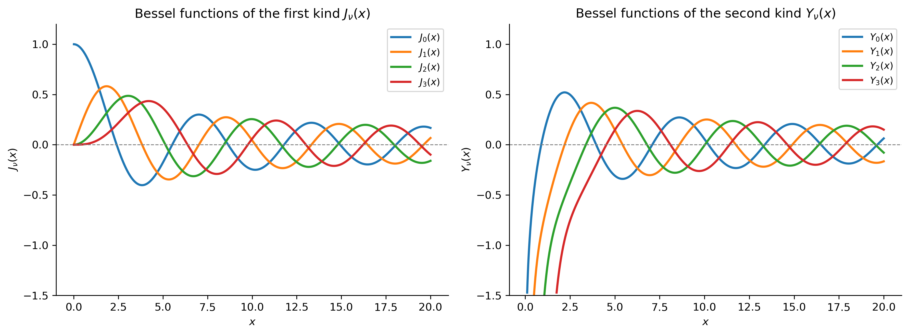

Series Solutions at a Singular Point, and a Remarkable Family of Functions
Show the code
import numpy as npimport sympy as symimport matplotlib as mplimport matplotlib.pyplot as pltfrom scipy.special import jv, yv, jn_zerosfrom IPython.display import Math, displaympl.rcParams['figure.dpi'] =150mpl.rcParams['axes.spines.top'] =Falsempl.rcParams['axes.spines.right'] =False
Among all second-order linear ODEs, Bessel’s equation is perhaps the one whose solutions appear most frequently in the physical world. Vibrations of a circular drumhead, heat flow in a cylinder, the quantum mechanics of the hydrogen atom, the propagation of electromagnetic waves in a coaxial cable — all of these lead, after an appropriate change of variables, to Bessel’s equation. The solutions, called Bessel functions, are as fundamental to mathematical physics as the trigonometric functions are to the theory of constant-coefficient ODEs.
This section develops Bessel’s equation as a natural application of the Frobenius method (power series solutions at a regular singular point), derives the Bessel functions of the first and second kind, studies their most important properties, and demonstrates how to work with them in SymPy and SciPy.
Historical Background
The Origins: Bernoulli, Euler, and Bessel
The functions now named after Friedrich Wilhelm Bessel were encountered long before Bessel himself. Daniel Bernoulli (1700–1782) used them in 1732 when studying the oscillations of a hanging chain — one of the first vibration problems in mathematical physics. Leonhard Euler (1707–1783) encountered similar series in his work on circular membrane vibrations and on the motion of a solid body.
Friedrich Wilhelm Bessel (1784–1846) was an astronomer, not a mathematician by trade. In 1817, while studying the perturbations of planetary orbits, he carried out the first systematic investigation of the functions that now bear his name, including deriving their integral representation and establishing the recurrence relations. Bessel’s equation itself was studied even earlier by Joseph Fourier, in his 1807 treatise on the theory of heat, where it arises naturally when solving the heat equation in cylindrical coordinates.
The rigorous theory of Bessel functions was built up throughout the 19th century by Carl Neumann (who introduced the Bessel functions of the second kind, sometimes called Neumann functions), Hermann Hankel (Hankel functions), and many others. The definitive reference remains the 1922 treatise A Treatise on the Theory of Bessel Functions by G. N. Watson, which runs to over 800 pages.
NoteTimeline
Year
Person
Contribution
1732
Bernoulli
Series solutions for the oscillating chain — first Bessel functions
1764
Euler
Bessel functions in circular membrane vibrations
1807
Fourier
Heat equation in cylinders — Bessel’s equation in cylindrical coordinates
Bessel functions of the second kind (Neumann functions \(Y_\nu\))
1922
Watson
Definitive treatise on Bessel functions
The Vibrating Circular Drum: Motivation
To see where Bessel’s equation comes from naturally, consider the vibrating circular drumhead — a thin elastic membrane clamped at a circular boundary of radius \(R\). If \(u(r, \theta, t)\) denotes the transverse displacement, the wave equation in polar coordinates is \[
u_{tt} = c^2\!\left(u_{rr} + \frac{1}{r}u_r + \frac{1}{r^2}u_{\theta\theta}\right).
\] Looking for normal modes of the form \(u = R(r)\,\Theta(\theta)\,T(t)\), separating variables, and focusing on the radially symmetric modes (\(\Theta =\) constant), one finds that the radial factor \(R(r)\) satisfies \[
r^2 R'' + r R' + \lambda^2 r^2 R = 0,
\] where \(\lambda\) is related to the frequency of vibration. Setting \(x = \lambda r\) converts this to Bessel’s equation of order zero: \[
x^2 y'' + x y' + x^2 y = 0.
\] For non-radially-symmetric modes one obtains Bessel’s equation of order \(\nu\): \[
\boxed{x^2 y'' + x y' + (x^2 - \nu^2)y = 0.}
\tag{BE}
\] The natural frequencies of the drum are determined by the zeros of the solutions — a fact we will return to at the end of this section.
NoteOther applications of Bessel’s equation
Bessel’s equation (BE) also arises in:
Heat conduction in a solid cylinder: \(u_t = \kappa(u_{rr} + r^{-1}u_r)\), separating variables.
Electromagnetic waves in cylindrical waveguides and coaxial cables.
Quantum mechanics: the radial Schrödinger equation for the hydrogen atom leads (after substitutions) to related equations whose solutions are expressed in terms of Bessel functions.
Acoustics: sound radiation from a circular piston or the resonance modes of a circular room.
Regular Singular Points and the Frobenius Method
Singular Points
Bessel’s equation (BE), in standard form \(y'' + P(x)y' + Q(x)y = 0\), has \[
P(x) = \frac{1}{x}, \qquad Q(x) = 1 - \frac{\nu^2}{x^2}.
\] Both \(P\) and \(Q\) are singular at \(x = 0\): ordinary power series solutions \(y = \sum a_n x^n\) cannot be expected to work there.
The point \(x = 0\) is, however, a regular singular point because the limits \[
\lim_{x\to 0} x P(x) = 1, \qquad \lim_{x\to 0} x^2 Q(x) = -\nu^2
\] both exist and are finite. At a regular singular point, the Frobenius method guarantees at least one solution of the form \[
y = x^r \sum_{n=0}^{\infty} a_n x^n = \sum_{n=0}^{\infty} a_n x^{n+r}, \quad a_0 \neq 0,
\] where \(r\) is determined by the indicial equation.
The Indicial Equation for Bessel’s Equation
Substituting \(y = \sum_{n=0}^\infty a_n x^{n+r}\) into (BE) and collecting the lowest-order term (the \(x^r\) coefficient) gives the indicial equation: \[
r(r-1) + r - \nu^2 = 0 \quad\Longrightarrow\quad r^2 - \nu^2 = 0
\quad\Longrightarrow\quad r = \pm \nu.
\] The two roots are \(r_1 = \nu\) and \(r_2 = -\nu\). When \(\nu \geq 0\), the larger root is \(r_1 = \nu\), and the Frobenius method with this root yields the first, better-behaved solution.
ImportantThe Indicial Equation
For Bessel’s equation of order \(\nu\), the indicial equation is \(r^2 = \nu^2\), giving roots \(r = \pm\nu\). The structure of the general solution depends on whether \(2\nu\) is a non-negative integer:
\(2\nu \notin \mathbb{Z}_{\geq 0}\): two independent Frobenius series \(J_\nu\) and \(J_{-\nu}\).
\(\nu = 0\): the two roots coincide (\(r = 0\)); the second solution involves a logarithm.
\(\nu \in \mathbb{Z}^+\): roots differ by a positive integer \(2\nu\); the second solution again involves a logarithm.
In every case the general solution is written \(y = c_1 J_\nu(x) + c_2 Y_\nu(x)\).
Deriving the Bessel Function \(J_\nu(x)\)
We derive the series for \(J_\nu(x)\) using the Frobenius root \(r = \nu \geq 0\). Substituting \(y = \sum_{n=0}^\infty a_n x^{n+\nu}\) into (BE):
The Gamma function \(\Gamma\) generalizes the factorial: \(\Gamma(n+1) = n!\) for non-negative integers. This normalization is the universal convention and is what SymPy and SciPy implement.
Computing \(J_\nu\) with SymPy
SymPy provides Bessel functions via sym.besselj(nu, x). We can verify the series definition, compute values, and differentiate symbolically.
Show the code
x = sym.Symbol('x', positive=True)nu = sym.Symbol('nu', nonnegative=True)# ---- Symbolic Bessel functions ----J0_sym = sym.besselj(0, x)J1_sym = sym.besselj(1, x)J2_sym = sym.besselj(2, x)print("Bessel functions of the first kind (SymPy):")display(Math(r'J_0(x) = '+ sym.latex(J0_sym)))display(Math(r'J_1(x) = '+ sym.latex(J1_sym)))# Series expansion of J_0 about x=0J0_series = sym.series(J0_sym, x, 0, n=10)print("\nPower series for J_0(x) about x = 0 (first 5 terms):")display(Math(r'J_0(x) = '+ sym.latex(J0_series)))
Bessel functions of the first kind (SymPy):
\(\displaystyle J_0(x) = J_{0}\left(x\right)\)
\(\displaystyle J_1(x) = J_{1}\left(x\right)\)
Power series for J_0(x) about x = 0 (first 5 terms):
The sym.simplify calls above return \(0\), confirming that SymPy’s besselj satisfies Bessel’s equation exactly — a reassuring sanity check before numerical work.
The Bessel Function of the Second Kind \(Y_\nu(x)\)
The series \(J_\nu(x)\) is a perfectly good solution, but for \(\nu \geq 0\) it satisfies \(J_\nu(0) = 0\) (for \(\nu > 0\)) or \(J_0(0) = 1\). To form the general solution we need a linearly independent second solution.
When \(\nu\) is not an integer, \(J_{-\nu}(x)\) is that second solution. When \(\nu\) is an integer \(n\), however, \(J_{-n}(x) = (-1)^n J_n(x)\) and the two are proportional — a new construction is needed.
The standard second solution, valid for all \(\nu\), is the Bessel function of the second kind (also called the Neumann function or Weber function):
\[
Y_\nu(x) = \frac{J_\nu(x)\cos(\nu\pi) - J_{-\nu}(x)}{\sin(\nu\pi)},
\] with the integer-order cases defined by the limit \(\nu \to n\). For integer \(\nu = n\), this limit produces a solution involving \(\ln(x/2)\): \[
Y_0(x) = \frac{2}{\pi}\!\left[J_0(x)\ln\!\left(\tfrac{x}{2}\right) + \gamma
+ \sum_{k=1}^{\infty}\frac{(-1)^{k+1}H_k}{(k!)^2}\!\left(\tfrac{x}{2}\right)^{\!2k}\right],
\] where \(\gamma \approx 0.5772\) is the Euler–Mascheroni constant and \(H_k = 1 + \tfrac{1}{2}
+ \cdots + \tfrac{1}{k}\) are the harmonic numbers.
The key behavior is: \(Y_\nu(x) \to -\infty\) as \(x \to 0^+\). In any physical problem where the domain includes \(x = 0\) (e.g., the center of a drum), the condition that the solution remain finite forces \(c_2 = 0\), leaving only \(J_\nu\). \(Y_\nu\) is needed only when the origin is excluded from the domain.
ImportantGeneral Solution of Bessel’s Equation
For any order \(\nu \geq 0\) and \(x > 0\): \[
y(x) = c_1 J_\nu(x) + c_2 Y_\nu(x).
\] Both \(J_\nu\) and \(Y_\nu\) are oscillatory and decay like \(x^{-1/2}\) for large \(x\). \(J_\nu(0)\) is finite; \(Y_\nu(x) \to -\infty\) as \(x \to 0^+\).
Show the code
Y0_sym = sym.bessely(0, x)Y1_sym = sym.bessely(1, x)print("Bessel functions of the second kind (SymPy):")display(Math(r'Y_0(x) = '+ sym.latex(Y0_sym)))display(Math(r'Y_1(x) = '+ sym.latex(Y1_sym)))# Verify Y_0 satisfies Bessel's equation of order 0y_Y0 = Y0_symode_Y0 = x**2* sym.diff(y_Y0, x, 2) + x * sym.diff(y_Y0, x) + x**2* y_Y0display(Math(r"x^2 Y_0'' + x Y_0' + x^2 Y_0 = "+ sym.latex(sym.simplify(ode_Y0))))
# Use SymPy lambdify to convert symbolic Bessel functions to fast numerical callables.# We supply a custom module dictionary so that lambdify maps SymPy's besselj/bessely# to scipy.special.jv/yv, which numpy alone does not provide.x_sym = sym.Symbol('x', positive=True)from scipy.special import jv as _jv, yv as _yvbessel_modules = [{'besselj': _jv, 'bessely': _yv}, 'numpy']orders = [0, 1, 2, 3]colors = plt.cm.tab10(np.arange(len(orders)))x_vals = np.linspace(0.01, 20, 1000)# Build lambdified functions from SymPyJ_funcs = [sym.lambdify(x_sym, sym.besselj(n, x_sym), bessel_modules) for n in orders]Y_funcs = [sym.lambdify(x_sym, sym.bessely(n, x_sym), bessel_modules) for n in orders]fig, axes = plt.subplots(1, 2, figsize=(12, 4.5))for n, color, Jf, Yf inzip(orders, colors, J_funcs, Y_funcs): axes[0].plot(x_vals, Jf(x_vals), color=color, lw=2, label=f'$J_{n}(x)$') y_vals = Yf(x_vals)# Mask values below display range to keep the plot clean near x=0 y_vals_masked = np.where(y_vals <-1.5, np.nan, y_vals) axes[1].plot(x_vals, y_vals_masked, color=color, lw=2, label=f'$Y_{n}(x)$')for ax in axes: ax.axhline(0, color='gray', lw=0.8, ls='--') ax.set_xlabel('$x$') ax.legend(fontsize=9) ax.set_ylim(-1.5, 1.2)axes[0].set_title('Bessel functions of the first kind $J_\\nu(x)$')axes[0].set_ylabel('$J_\\nu(x)$')axes[1].set_title('Bessel functions of the second kind $Y_\\nu(x)$')axes[1].set_ylabel('$Y_\\nu(x)$')plt.tight_layout()plt.show()

Figure 1: Bessel functions of the first kind \(J_\nu\) (left) and second kind \(Y_\nu\) (right) for \(\nu = 0, 1, 2, 3\). All \(J_\nu\) are finite at the origin; all \(Y_\nu\) diverge to \(-\infty\) as \(x \to 0^+\). Both families are oscillatory and decay in amplitude for large \(x\).
Comparing SymPy and SciPy
It is instructive to verify that SymPy’s symbolic Bessel functions agree numerically with SciPy’s highly optimized implementations.
Figure 2: Comparison of SymPy (lambdified) and SciPy implementations of \(J_0\) and \(J_1\). The two implementations agree to machine precision; the difference (bottom panels, plotted on a log scale) is at the level of floating-point rounding error, around \(10^{-15}\).
TipSymPy vs SciPy: when to use each
SymPy is ideal for symbolic manipulation: verifying that a function satisfies an ODE, computing derivatives and series, applying recurrence relations, and producing exact expressions. SciPy (scipy.special.jv, yv, jn_zeros) is the right tool for numerical work requiring speed or high precision over arrays. The two are complementary: use SymPy to understand the structure, SciPy to compute.
Key Properties of Bessel Functions
Recurrence Relations
One of the most useful features of Bessel functions is the web of recurrence relations connecting functions of adjacent orders. The two fundamental recurrences are:
From these one derives the derivative formulas: \[
\frac{d}{dx}\!\left[x^\nu J_\nu(x)\right] = x^\nu J_{\nu-1}(x),
\qquad
\frac{d}{dx}\!\left[x^{-\nu} J_\nu(x)\right] = -x^{-\nu} J_{\nu+1}(x).
\]
The same recurrences hold with \(J_\nu\) replaced by \(Y_\nu\).
Let us verify (R1) and (R2) symbolically with SymPy:
A fundamental fact — crucial for the drum problem — is that each \(J_\nu\) has infinitely many positive real zeros. We denote the \(m\)-th positive zero of \(J_\nu\) by \(j_{\nu,m}\): \[
J_\nu(j_{\nu,m}) = 0, \qquad 0 < j_{\nu,1} < j_{\nu,2} < \cdots \to \infty.
\]
SciPy computes these via scipy.special.jn_zeros(n, k), which returns the first \(k\) positive zeros of \(J_n\).
Show the code
print("First five positive zeros of J_nu:\n")print(f"{'nu':>4}{'j(nu,1)':>10}{'j(nu,2)':>10}{'j(nu,3)':>10} "f"{'j(nu,4)':>10}{'j(nu,5)':>10}")print("-"*60)for n in [0, 1, 2, 3]: z = jn_zeros(n, 5)print(f" {n:>2} "+" ".join(f"{zi:10.6f}"for zi in z))
First five positive zeros of J_nu:
nu j(nu,1) j(nu,2) j(nu,3) j(nu,4) j(nu,5)
------------------------------------------------------------
0 2.404826 5.520078 8.653728 11.791534 14.930918
1 3.831706 7.015587 10.173468 13.323692 16.470630
2 5.135622 8.417244 11.619841 14.795952 17.959819
3 6.380162 9.761023 13.015201 16.223466 19.409415
Figure 3: The first five positive zeros of \(J_0\), \(J_1\), \(J_2\), and \(J_3\) (marked by colored dots on the respective curves). The zeros interlace between adjacent orders: between any two consecutive zeros of \(J_\nu\) there is exactly one zero of \(J_{\nu+1}\).
Asymptotic Behavior
For large \(x\), Bessel functions oscillate like damped cosines: \[
J_\nu(x) \approx \sqrt{\frac{2}{\pi x}}\cos\!\left(x - \frac{\nu\pi}{2} - \frac{\pi}{4}\right),
\qquad x \to \infty.
\]\[
Y_\nu(x) \approx \sqrt{\frac{2}{\pi x}}\sin\!\left(x - \frac{\nu\pi}{2} - \frac{\pi}{4}\right),
\qquad x \to \infty.
\] This shows that the amplitude decays like \(x^{-1/2}\) — Bessel functions are damped oscillations. The zeros of \(J_\nu\) are asymptotically spaced \(\pi\) apart, just like the zeros of \(\cos\).
For small \(x\) (near the origin): \[
J_\nu(x) \approx \frac{1}{\Gamma(\nu+1)}\!\left(\frac{x}{2}\right)^\nu, \qquad
Y_0(x) \approx \frac{2}{\pi}\ln x, \qquad
Y_\nu(x) \approx -\frac{\Gamma(\nu)}{\pi}\!\left(\frac{2}{x}\right)^\nu \quad (\nu > 0).
\]
Figure 4: Left: \(J_0(x)\) (blue) and its large-\(x\) asymptotic approximation \(\sqrt{2/\pi x}\cos(x - \pi/4)\) (dashed orange). The approximation is excellent for \(x \gtrsim 5\). Right: the relative error \(|J_0 - \text{asymptotic}|/|J_0|\) on a log scale, confirming convergence of the approximation.
Orthogonality
One of the deepest properties of Bessel functions, and the one that makes them useful for solving boundary value problems, is their orthogonality. Let \(j_{\nu,m}\) denote the \(m\)-th positive zero of \(J_\nu\). Then:
ImportantOrthogonality of Bessel Functions
\[
\int_0^1 x\, J_\nu\!\left(j_{\nu,m}\,x\right) J_\nu\!\left(j_{\nu,n}\,x\right)\,dx
= \frac{\delta_{mn}}{2}\,\bigl[J_{\nu+1}(j_{\nu,m})\bigr]^2,
\] where \(\delta_{mn}\) is the Kronecker delta.
The weight function \(x\) (rather than \(1\)) reflects the geometry of polar coordinates — integration in polar coordinates carries a factor of \(r\). This orthogonality underlies the Fourier–Bessel series, the cylindrical analog of a Fourier sine series.
Show the code
# Numerical verification of orthogonality for J_0from scipy.integrate import quadnu_orth =0print(f"Numerical verification of orthogonality for J_{nu_orth}:\n")print(f" (m, n) integral expected")print(" "+"-"*45)for m inrange(1, 4):for n inrange(1, 4): zm = jn_zeros(nu_orth, m)[-1] zn = jn_zeros(nu_orth, n)[-1] integrand =lambda t: t * jv(nu_orth, zm * t) * jv(nu_orth, zn * t) result, _ = quad(integrand, 0, 1, limit=200)if m == n: expected =0.5* jv(nu_orth +1, zm)**2else: expected =0.0print(f" ({m}, {n}) {result:+.6f}{expected:+.6f}")
We now return to the vibrating drum that motivated Bessel’s equation. The drum occupies the disk \(0 \leq r \leq R\) and is clamped at its boundary: \(u(R, \theta, t) = 0\).
For radially symmetric modes (no \(\theta\) dependence), the spatial factor satisfies Bessel’s equation of order \(0\), and the boundary condition \(u(R) = 0\) requires \(J_0(\lambda R) = 0\), i.e., \(\lambda R = j_{0,m}\) for \(m = 1, 2, 3, \ldots\) The normal mode frequencies are \[
\omega_{0,m} = \frac{c\, j_{0,m}}{R},
\] where \(c\) is the wave speed. The first three radially symmetric mode shapes are \(J_0(j_{0,1}\,r/R)\), \(J_0(j_{0,2}\,r/R)\), \(J_0(j_{0,3}\,r/R)\), each with \(m-1\) nodal circles in the interior.
For non-radially-symmetric modes of azimuthal order \(\nu\), the boundary condition \(J_\nu(\lambda R) = 0\) gives frequencies \(\omega_{\nu,m} = c\,j_{\nu,m}/R\).
Figure 5: Radial profiles (left) and two-dimensional mode shapes (right) of the first three radially symmetric normal modes of a circular drum. Each mode \(J_0(j_{0,m}\,r/R)\) has \(m-1\) interior nodal circles (locations where the membrane does not move). The natural frequencies are proportional to the zeros \(j_{0,1} \approx 2.405\), \(j_{0,2} \approx 5.520\), and \(j_{0,3} \approx 8.654\).
NoteWhy are drums not perfectly harmonic?
For a string, the natural frequencies are integer multiples of the fundamental: \(\omega_n = n\omega_1\) — the overtones are harmonics. For a circular drum, the frequencies are proportional to \(j_{0,1}, j_{0,2}, j_{0,3}, \ldots \approx 2.405,\,5.520,\,8.654,\ldots\) These are not in a simple integer ratio, which is why a drum does not produce a clear musical pitch the way a string does. This is directly a consequence of the zeros of Bessel functions being irrational and non-uniformly spaced.
Symbolic Differentiation and the Derivative Formula
We conclude with a SymPy demonstration of the derivative formula \(\frac{d}{dx}[x^{-\nu}J_\nu(x)] = -x^{-\nu}J_{\nu+1}(x)\), which encodes an elegant downward-shift property.
Bessel’s equation has a regular singular point at \(x = 0\); the Frobenius method with root \(r = \nu\) produces the series for \(J_\nu\).
\(J_\nu(x)\) is bounded at the origin; \(Y_\nu(x)\) is singular there. In problems where the domain includes \(r = 0\), only \(J_\nu\) appears.
The positive zeros \(j_{\nu,m}\) of \(J_\nu\) are the eigenvalues of the Bessel boundary value problem; they determine the natural frequencies of circular drums, cylinders, and waveguides.
For large \(x\), Bessel functions behave like damped sinusoids with amplitude \(\sim x^{-1/2}\).
The orthogonality of \(\{J_\nu(j_{\nu,m}x)\}\) with weight \(x\) on \([0,1]\) underlies Fourier–Bessel series, the cylindrical analog of Fourier sine series.
Relevant Videos
Introduction to Bessel functions:
Solving Bessel equations:
References
TipExpand for Session Info
Show the code
import sysprint("Python version:", sys.version)print('\n'.join(f'{m.__name__}=={m.__version__}'for m inglobals().values() ifgetattr(m, '__version__', None)))